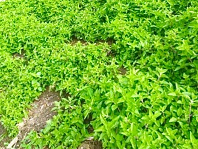
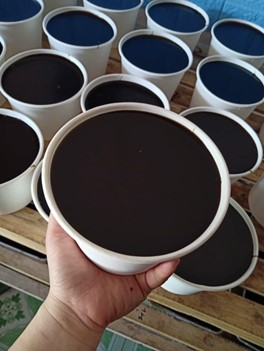
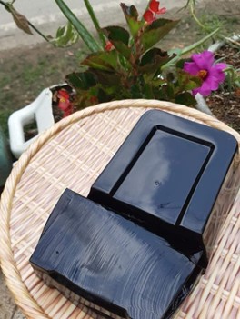
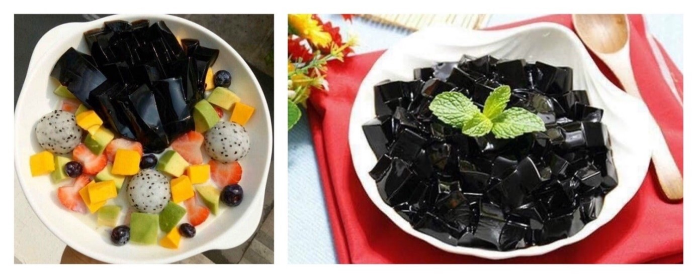

Thạch đen
Thạch đen là loại một món ăn vặt thanh mát, giải nhiệt mùa hè. Ở miền Bắc, nổi tiếng nhất là loại thạch có nguồn gốc từ huyện Thạch An, Cao Bằng. Để có thành phẩm ngon và hấp dẫn là cả một quá trình người làm cẩn thận, tỉ mỉ với từng khâu quan trọng như chọn nguyên liệu, nấu lá và chế biến...
Nguyên liệu chính làm nên món thạch là cây thạch đen (còn được gọi là cây Tiên Thảo hay Sương Sáo) - đây là một loại cây thân cỏ cao 40 - 60 cm, thân 4 cạnh, phân nhánh nhiều, tỏa ra trên mặt đất giống như cây bạc hà. Cây thạch đen là giống cây trồng ngắn ngày, chỉ 4 tháng là có thể thu hoạch. Đặc biệt, do khí hậu thổ nhưỡng thích hợp nên cây thạch đen được trồng ở huyện Thạch An cho ra lá có chất lượng tốt nhất trên địa bàn tỉnh Cao Bằng. Sau khi thu hoạch, cây được phơi khô để bảo quản. Như vậy sẽ đảm bảo nguồn cung cấp nguyên liệu sản xuất thạch đen cho cả năm.
Thạch đen là món ăn được chế biến khá đơn giản. Đầu tiên, cây thạch khô sẽ được mang ra sơ chế, rồi cho vào nồi ninh trong vòng khoảng 3 tiếng. Sau khi cây thạch đã nhừ, người nấu thạch đem cây đi vò thật kỹ, rồi lọc lấy nước. Tiếp đến người nấu thạch đem nước đó hòa thêm một chút bột năng và đường đun trong khoảng 1 tiếng rưỡi, với lửa liu riu đến khi thạch đủ độ kết dính và không dính đũa là đã tạo ra thành phẩm đạt yêu cầu.
 Sau khi chế biến xong, người nấu thạch chỉ cần đợi thạch bớt nóng rồi đổ vào khuôn, chờ thạch nguội hẳn thì được bảo quản nơi mát.
Mỗi người nấu đều có một bí quyết chế biến thạch đen riêng. Do vậy, khi thưởng thức, thực khách có thể nhận thấy sự khác biệt giữa thạch đến từ những cơ sở sản xuất khác nhau. Nhưng có thể thấy các cơ sở sản xuất ở Cao Bằng hiện nay vẫn đang nấu thạch đen theo phương pháp thủ công, không dùng chất bảo quản, không dùng phẩm màu nhưng vẫn tạo được độ thơm ngon, dẻo dai cho sản phẩm.
Hiện nay, Cao Bằng đã có rất nhiều cơ sở sản xuất thạch đen uy tín về chất lượng có khả năng cung cấp phục vụ nhu cầu của thực khách trong và ngoài tỉnh. Với vị ngọt thanh mát, thạch đen Cao Bằng đã ngày càng phổ biến và trở thành món quà đặc sản của du khách mỗi khi có chuyến lên thăm mảnh đất Cao Bằng.